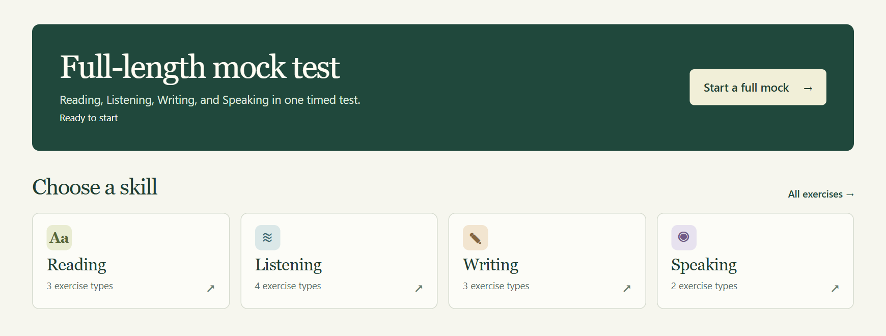
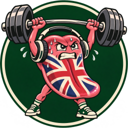
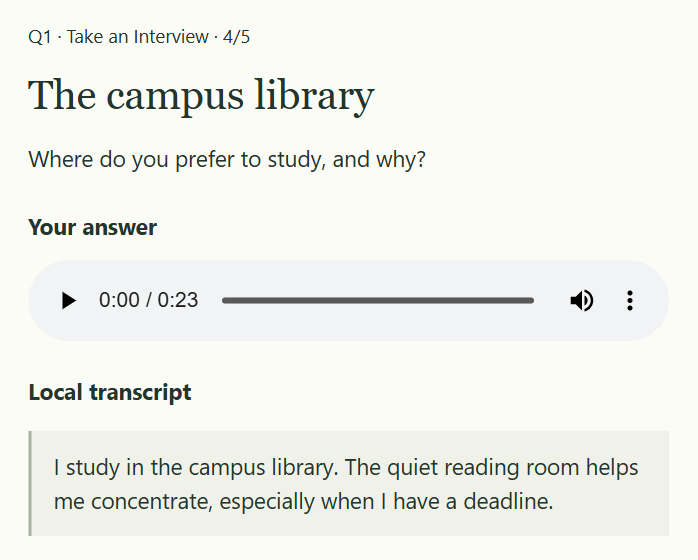
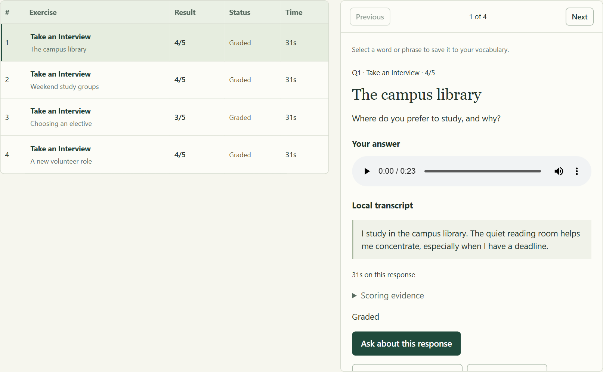
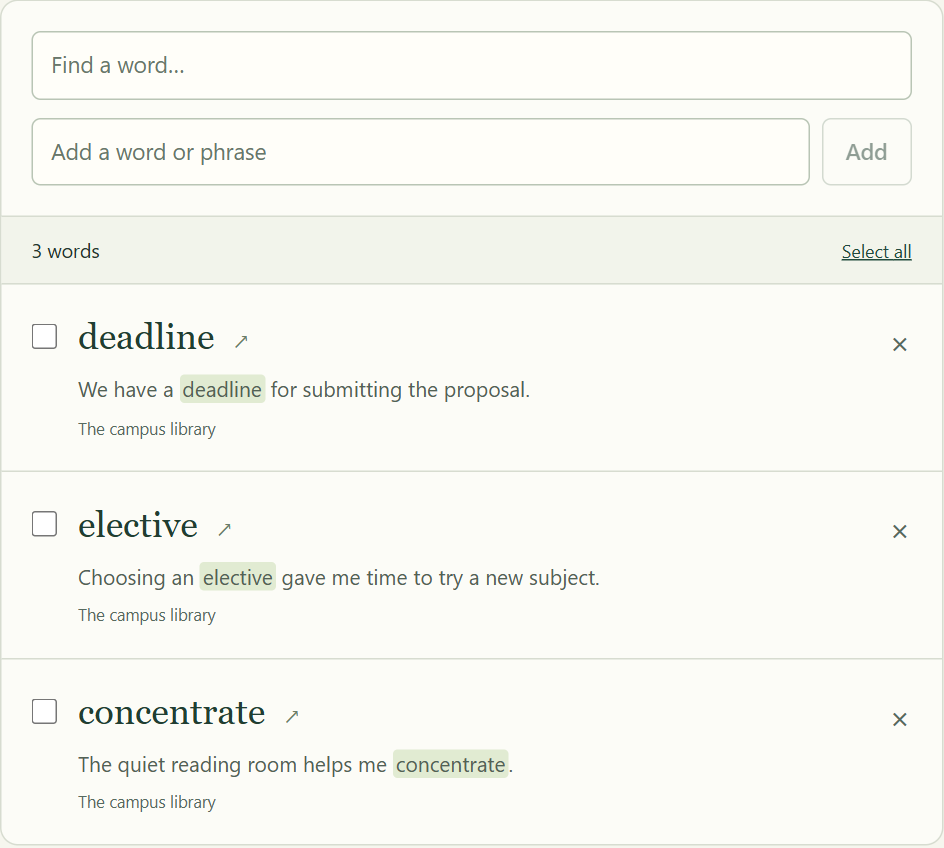

Take a full mock ↗
Work through all four sections under time limits. For a shorter session, choose one section or one task type.

En-GYMIndependent practice for the TOEFL iBT® test on Windows. Take a timed mock, replay your speaking answers, and work through the difficult questions with your AI trainer.
Download for Windows Windows 10 or 11 · Intel/AMD x64

Work through all four sections under time limits. For a shorter session, choose one section or one task type.

Find a missed question, compare your answer with the key, or ask the trainer to discuss the whole attempt.

Save a phrase with its original sentence. Revisit it in word games or ask for a reading text built around your collection.
Your attempts, recordings and vocabulary stay in your Windows profile. Installed practice and speech tools work offline. AI grading, conversation and new exercises use your chosen online provider.
Read about AI and local data →